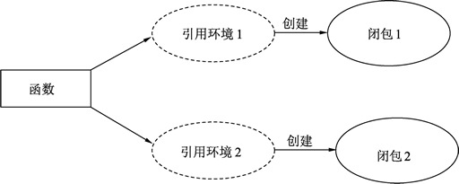

Go语言闭包（Closure）——引用了外部变量的匿名函数
Go语言中闭包是引用了自由变量的函数，被引用的自由变量和函数一同存在，即使已经离开了自由变量的环境也不会被释放或者删除，在闭包中可以继续使用这个自由变量，因此，简单的说：
一个函数类型就像结构体一样，可以被实例化，函数本身不存储任何信息，只有与引用环境结合后形成的闭包才具有“记忆性”，函数是编译期静态的概念，而闭包是运行期动态的概念。
闭包对环境中变量的引用过程也可以被称为“捕获”，在 C++11 标准中，捕获有两种类型，分别是引用和复制，可以改变引用的原值叫做“引用捕获”，捕获的过程值被复制到闭包中使用叫做“复制捕获”。
在 Lua 语言中，将被捕获的变量起了一个名字叫做 Upvalue，因为捕获过程总是对闭包上方定义过的自由变量进行引用。
闭包在各种语言中的实现也是不尽相同的，在 Lua 语言中，无论闭包还是函数都属于 Prototype 概念，被捕获的变量以 Upvalue 的形式引用到闭包中。
C++ 与 C# 中为闭包创建了一个类，而被捕获的变量在编译时放到类中的成员中，闭包在访问被捕获的变量时，实际上访问的是闭包隐藏类的成员。
代码输出：
累加器的实现：
对比输出的日志发现 accumulator 与 accumulator2 输出的函数地址不同，因此它们是两个不同的闭包实例。
每调用一次 accumulator 都会自动对引用的变量进行累加。
玩家生成器的实现：
闭包还具有一定的封装性，第 11 行的变量是 playerGen 的局部变量，playerGen 的外部无法直接访问及修改这个变量，这种特性也与面向对象中强调的封装性类似。
函数 + 引用环境 = 闭包
同一个函数与不同引用环境组合，可以形成不同的实例，如下图所示。

图：闭包与函数引用
图：闭包与函数引用
一个函数类型就像结构体一样，可以被实例化，函数本身不存储任何信息，只有与引用环境结合后形成的闭包才具有“记忆性”，函数是编译期静态的概念，而闭包是运行期动态的概念。
其它编程语言中的闭包
闭包（Closure）在某些编程语言中也被称为 Lambda 表达式。闭包对环境中变量的引用过程也可以被称为“捕获”，在 C++11 标准中，捕获有两种类型，分别是引用和复制，可以改变引用的原值叫做“引用捕获”，捕获的过程值被复制到闭包中使用叫做“复制捕获”。
在 Lua 语言中，将被捕获的变量起了一个名字叫做 Upvalue，因为捕获过程总是对闭包上方定义过的自由变量进行引用。
闭包在各种语言中的实现也是不尽相同的，在 Lua 语言中，无论闭包还是函数都属于 Prototype 概念，被捕获的变量以 Upvalue 的形式引用到闭包中。
C++ 与 C# 中为闭包创建了一个类，而被捕获的变量在编译时放到类中的成员中，闭包在访问被捕获的变量时，实际上访问的是闭包隐藏类的成员。
在闭包内部修改引用的变量
闭包对它作用域上部的变量可以进行修改，修改引用的变量会对变量进行实际修改，通过下面的例子来理解：
// 准备一个字符串
str := "hello world"
// 创建一个匿名函数
foo := func() {
// 匿名函数中访问str
str = "hello dude"
}
// 调用匿名函数
foo()
代码说明如下：
- 第 2 行，准备一个字符串用于修改。
- 第 5 行，创建一个匿名函数。
- 第 8 行，在匿名函数中并没有定义 str，str 的定义在匿名函数之前，此时，str 就被引用到了匿名函数中形成了闭包。
- 第 12 行，执行闭包，此时 str 发生修改，变为 hello dude。
代码输出：
hello dude
示例：闭包的记忆效应
被捕获到闭包中的变量让闭包本身拥有了记忆效应，闭包中的逻辑可以修改闭包捕获的变量，变量会跟随闭包生命期一直存在，闭包本身就如同变量一样拥有了记忆效应。累加器的实现：
package main
import (
"fmt"
)
// 提供一个值, 每次调用函数会指定对值进行累加
func Accumulate(value int) func() int {
// 返回一个闭包
return func() int {
// 累加
value++
// 返回一个累加值
return value
}
}
func main() {
// 创建一个累加器, 初始值为1
accumulator := Accumulate(1)
// 累加1并打印
fmt.Println(accumulator())
fmt.Println(accumulator())
// 打印累加器的函数地址
fmt.Printf("%p\n", &accumulator)
// 创建一个累加器, 初始值为1
accumulator2 := Accumulate(10)
// 累加1并打印
fmt.Println(accumulator2())
// 打印累加器的函数地址
fmt.Printf("%p\n", &accumulator2)
}
代码说明如下：
- 第 8 行，累加器生成函数，这个函数输出一个初始值，调用时返回一个为初始值创建的闭包函数。
- 第 11 行，返回一个闭包函数，每次返回会创建一个新的函数实例。
- 第 14 行，对引用的 Accumulate 参数变量进行累加，注意 value 不是第 11 行匿名函数定义的，但是被这个匿名函数引用，所以形成闭包。
- 第 17 行，将修改后的值通过闭包的返回值返回。
- 第 24 行，创建一个累加器，初始值为 1，返回的 accumulator 是类型为 func()int 的函数变量。
- 第 27 行，调用 accumulator() 时，代码从 11 行开始执行匿名函数逻辑，直到第 17 行返回。
- 第 32 行，打印累加器的函数地址。
对比输出的日志发现 accumulator 与 accumulator2 输出的函数地址不同，因此它们是两个不同的闭包实例。
每调用一次 accumulator 都会自动对引用的变量进行累加。
示例：闭包实现生成器
闭包的记忆效应被用于实现类似于设计模式中工厂模式的生成器，下面的例子展示了创建一个玩家生成器的过程。玩家生成器的实现：
package main
import (
"fmt"
)
// 创建一个玩家生成器, 输入名称, 输出生成器
func playerGen(name string) func() (string, int) {
// 血量一直为150
hp := 150
// 返回创建的闭包
return func() (string, int) {
// 将变量引用到闭包中
return name, hp
}
}
func main() {
// 创建一个玩家生成器
generator := playerGen("high noon")
// 返回玩家的名字和血量
name, hp := generator()
// 打印值
fmt.Println(name, hp)
}
代码输出如下：
high noon 150
代码说明如下：- 第 8 行，playerGen() 需要提供一个名字来创建一个玩家的生成函数。
- 第 11 行，声明并设定 hp 变量为 150。
- 第 14～18 行，将 hp 和 name 变量引用到匿名函数中形成闭包。
- 第 24 行中，通过 playerGen 传入参数调用后获得玩家生成器。
- 第 27 行，调用这个玩家生成器函数，可以获得玩家的名称和血量。
闭包还具有一定的封装性，第 11 行的变量是 playerGen 的局部变量，playerGen 的外部无法直接访问及修改这个变量，这种特性也与面向对象中强调的封装性类似。
关注公众号「站长严长生」，在手机上阅读所有教程，随时随地都能学习。内含一款搜索神器，免费下载全网书籍和视频。

微信扫码关注公众号